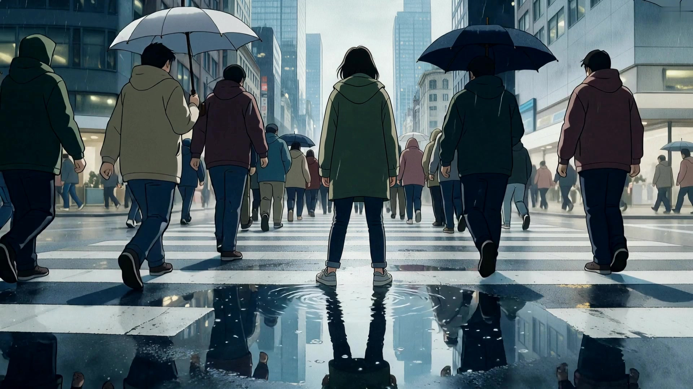
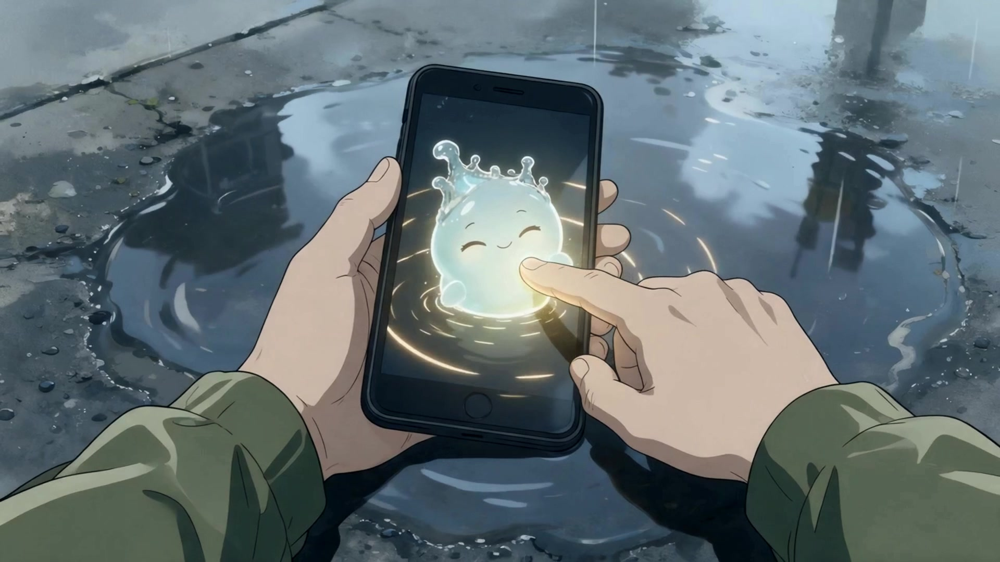
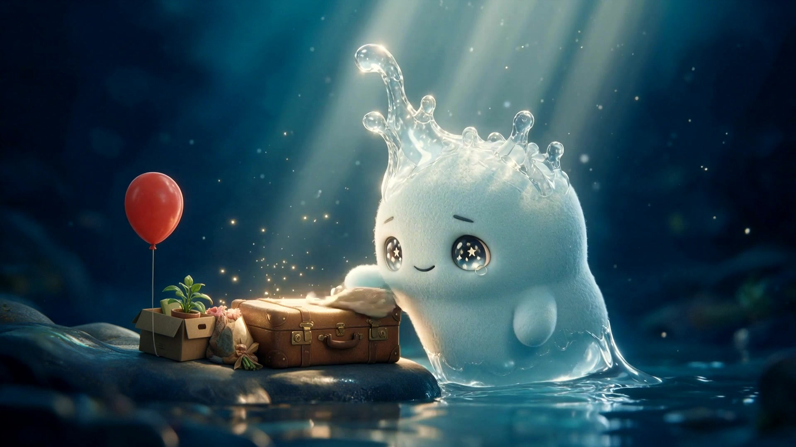
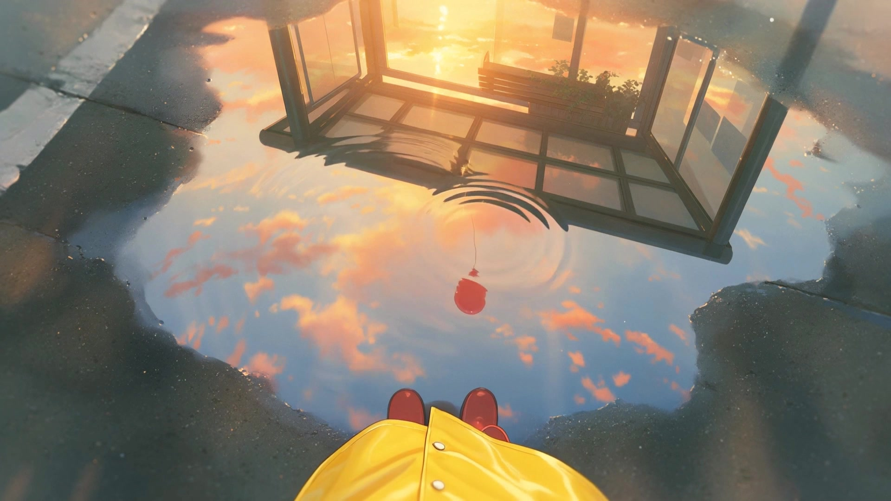

WOONGDEE: Still Here, Unreflected
2026 · AI 애니메이션 단편 · 4'20" · 무대사
감독 윤수련 · 제작 Epispace
방향을 잃은 사람이 비 오는 도시의 웅덩이에서, 카메라를 통해서만 보이는 빛 ‘웅디’를 만난다. 웅디는 제주 바다에서 수증기로 건너온 존재로, 사람들이 잊고 간 것들을 수면 아래에서 지키며 주인을 기다린다. 잃어버린 풍선을 아이에게 돌려주는 웅디를 따라가며 그는 자신이 사랑했던 것—스쳐 가는 빛을 붙잡는 기쁨—을 다시 떠올리고, 웅디는 더 이상 필요 없어진 순간 조용히 옅어진다.




제작 노트: 생성형 AI는 창작자가 주도하는 보조 도구로 사용했다. 세계관·구성·연출·편집은 작가 윤수련.
Festival submissions 2026–27 — KACF, T-AIFF, SVAIFF Korea, AI in Anime, Veritas, VISIONARIA, Video Hackers, M.AI, Fest Anča, ANIMA-KECH (results pending)